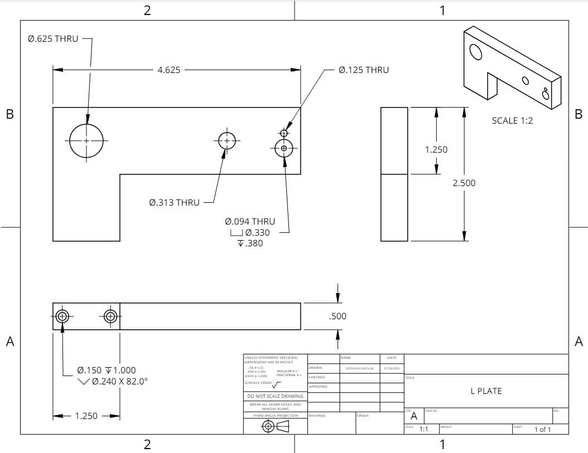
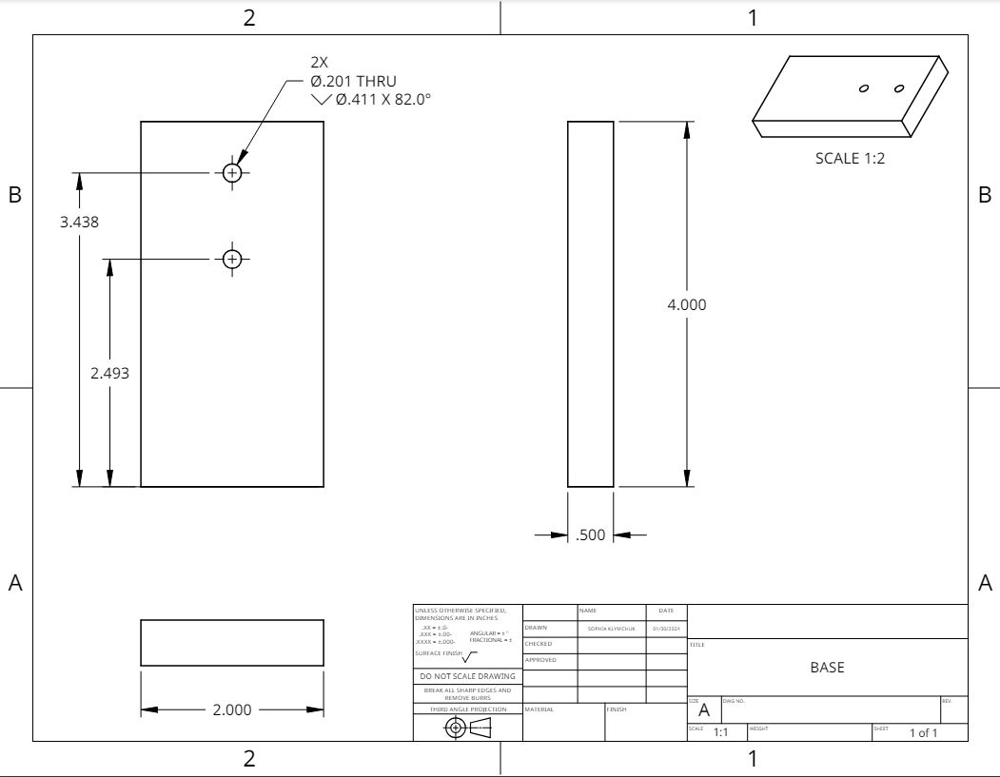
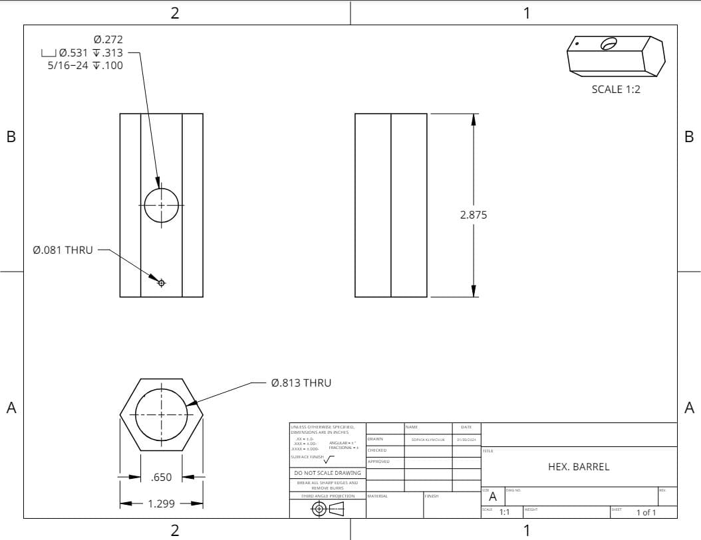
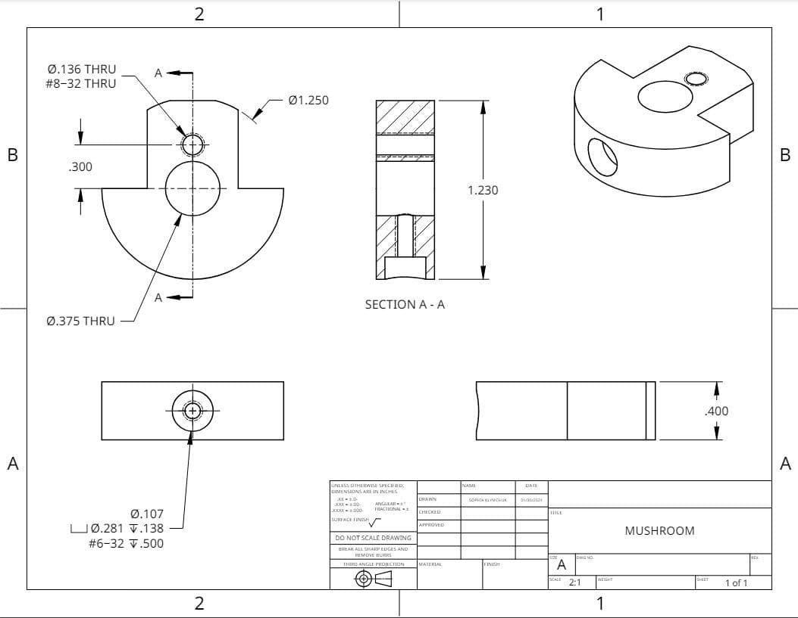
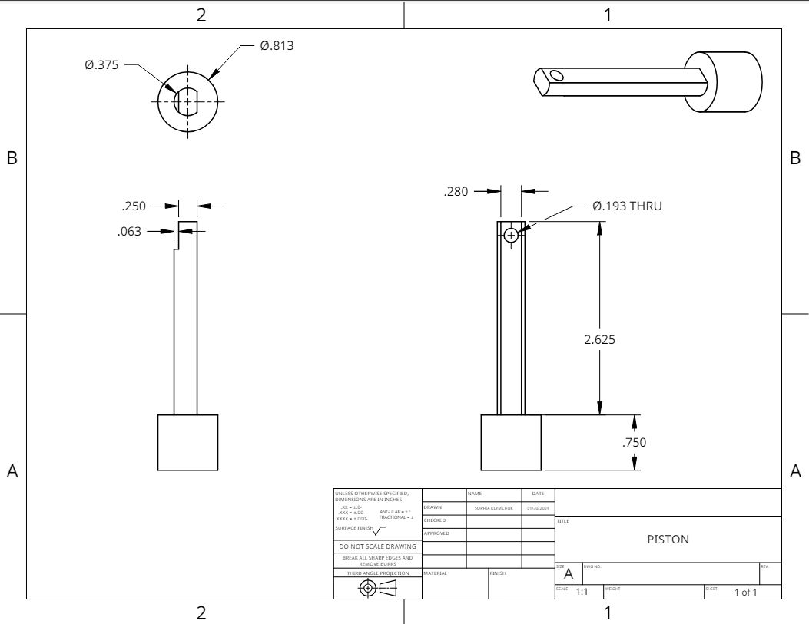
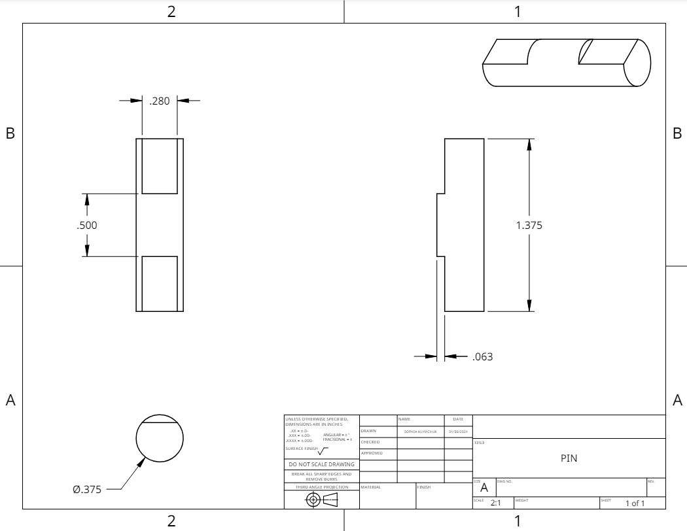
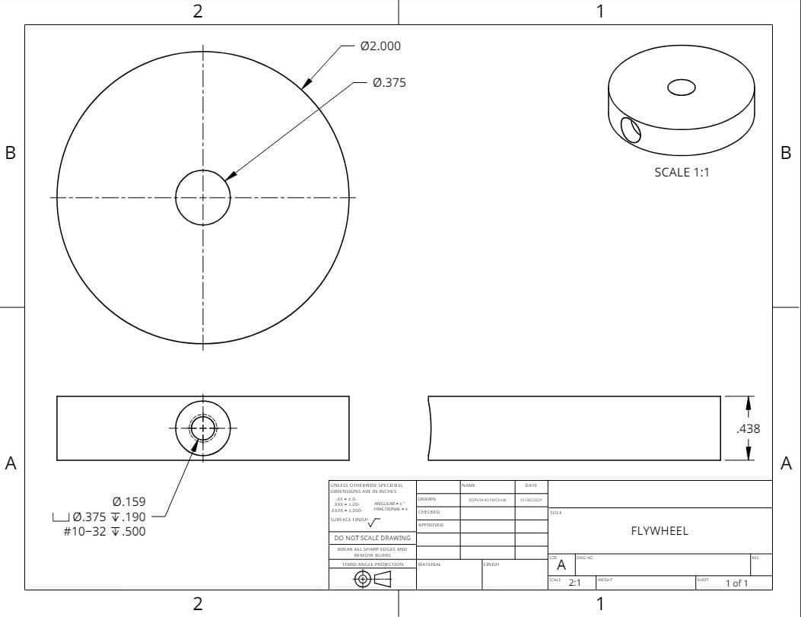

Machining Air Piston
A functional air piston, machined from solid steel. Every part — the piston, the barrel, the pin — got designed in CAD first, then cut on a lathe and mill.
CAD Design
Every part started in CAD, where fit and tolerance got worked out before any metal was cut. Get the geometry wrong here, and it costs you later on the mill.
Detailed Component Drawings
Seven parts, seven sets of machining operations. These drawings carry the dimensions and tolerances that guided every cut — miss one, and the assembly doesn't seal.







Fabrication Process & Precision Machining
Every component came off the mill or the lathe. Steel doesn't forgive a bad setup, so precision here started with getting the workholding right before the first cut.
The real lesson was sequencing. Cut the wrong face first, or drill a hole out of order, and you lose a reference surface — sometimes the whole part. Planning the operation order up front is what kept tolerances tight and scrap low.
Final product and Conclusions
Connect it to air, and it runs — clean reciprocating motion, no binding. The bigger lesson was in the sequencing and planning behind it. At production scale, one badly ordered machining step doesn't just cost you a part. It costs you a batch.